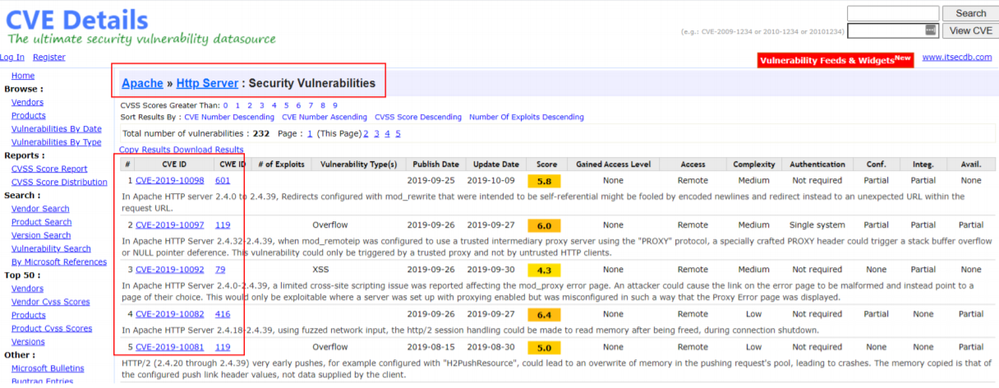

As an application's lifecycle continues, so does its version numbering. Applications contain seemingly innocent hallmarks of information such as version numbering. Known as information disclosure, these nuggets of information are handed to us by the server through error messages such as in the following screenshot, HTTP headers or even on the website itself.
An attacker can use knowledgebases such as Rapid7, AttackerKB, MITRE or Exploit-DB to look for vulnerabilities associated with the version number of that application. Vulnerabilities are attributed by a CVE number.
